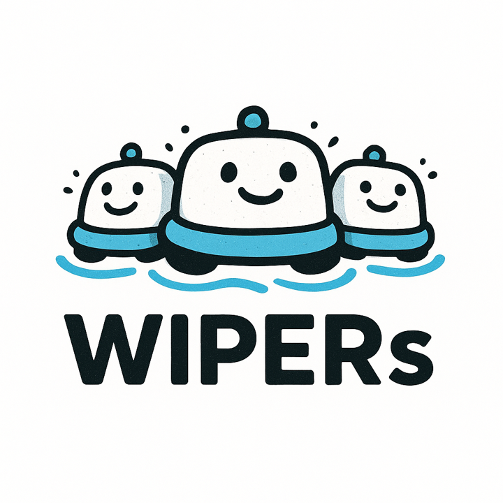
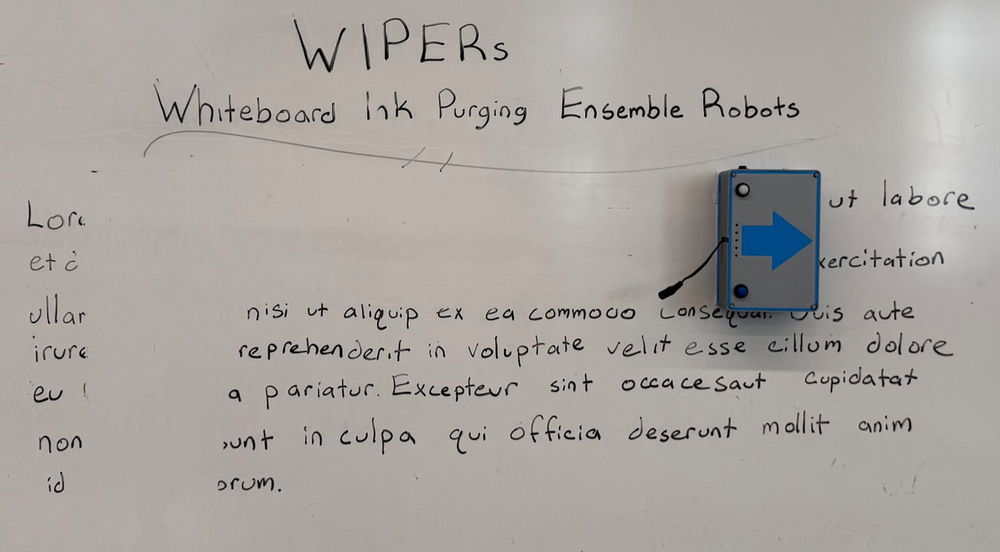
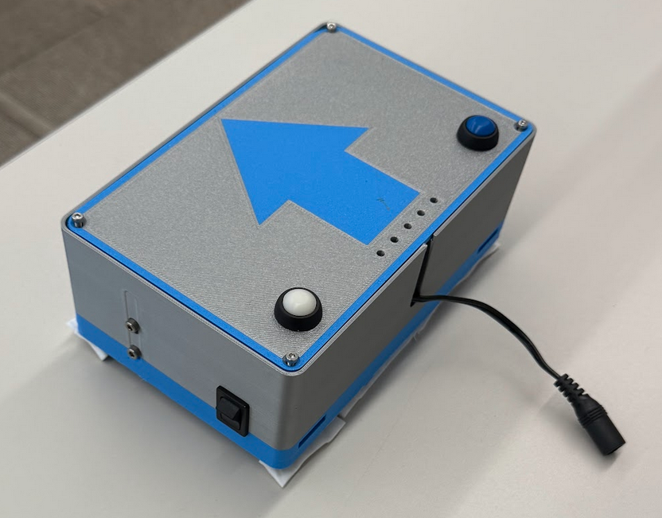
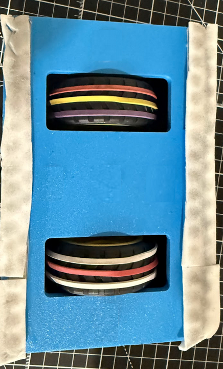
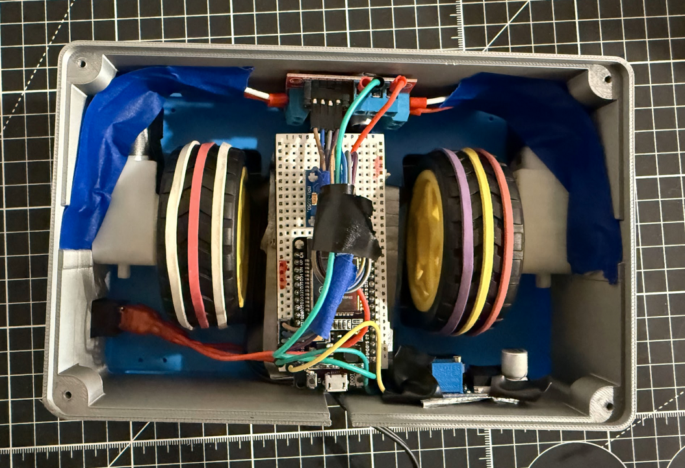
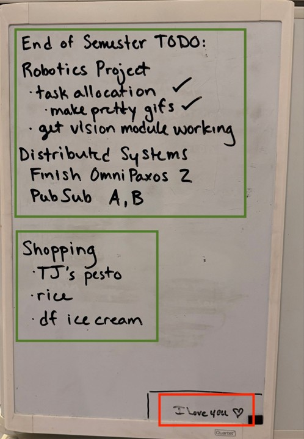
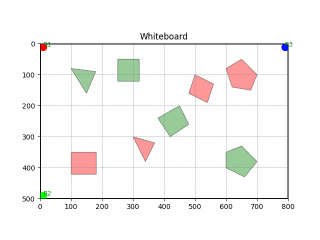
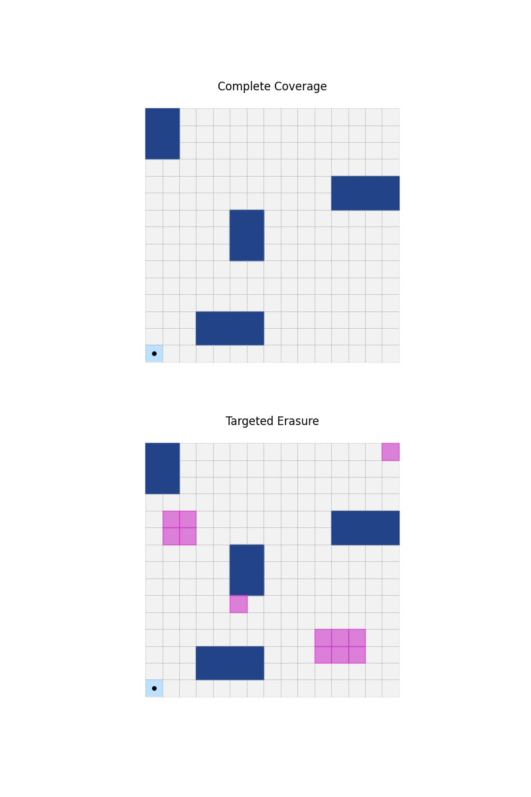

Objective
WIPERs goal is to develop a $50 system to autonomously erase the whiteboard, that can be updated into a multi-robot system to improve performance and capabilities.
Awarded "Best Vision and Execution" of BU RAS 2025
Awarded "Best Start-Up Branding" of BU RAS 2025


Design and Build
Uses magnets and two independentally driven motors to attach to and magnetically traverse the whiteboard, erasing along its path.
Iterated through 12 design prototypes, minimizing the footprint, reducing component cost to $28, and optimizing Magnet Force / Weight / Motor Torque ratios.


Electronics and Sensor Integration
Designed a compact enclosure to contain all electronics, motors and sensors. This includes:
- Rechargable battery pack.
- Motor encoders and IMU to track travel and orientation.
- ESP32 for bluetooth communication with Master of Perception unit (MoP)
- Limit switches to allow a single WIPER bot to detect whiteboard bounds and collision without MoP.


Perception Based Task Allocation
Simulated in Python, the Master of Perception (MoP) unit detects each WIPER, identifies ink targets to erase and boxed ink regions to avoid, like a note from mom.
The MoP allocates tasks to each WIPER using a Voronoi partitioning algorithm that balances workload while minimizing travel distance.


Coverage Path Planning
Using Python, simulated a boustrophedon coverage path planning algorithm to optimize the time and distance required to clean the entire whiteboard or specific targeted sections.
